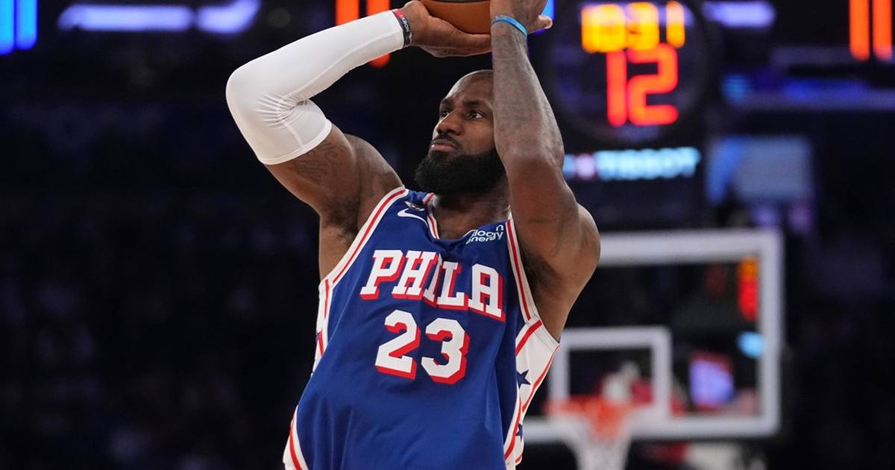

LeBron's first Sixers triple-double cools off Heat
LeBron James posted 25 points, 12 assists and 10 rebounds for his first triple-double as a 76er, leading Philadelphia past Miami 111-104 in an NBA Cup game and snapping the Heat's seven-game winning streak.

Disclosure: this post contains affiliate links. I earn a commission on qualifying purchases.
LeBron James recorded his first triple-double as a Philadelphia 76er on Wednesday night, and he did it in style — 25 points, 12 assists and 10 rebounds to lead the Sixers past the Miami Heat 111-104 in an NBA Cup game at home. The win snapped Miami's seven-game winning streak and kept Philadelphia in contention in East Group B.
It was his best all-around game in his first season with the Sixers, and it came against a former franchise, in front of nearly 20,000 screaming fans.
The second-quarter takeover
The night turned in the second quarter, when James scored 14 consecutive Philadelphia points. It started simply enough with a three-point play. He buried a long three, then ripped an even longer one from the top of the arc. The third three was for show — a 35-footer off a dump-off from Anfernee Simons just past midcourt, an old-fashioned swish. James ran back with his palms extended, bobbed his head and licked his lips as Miami called timeout and the arena blasted the "LeBron, LeBron, LeBron" remix. He powered down the lane for a layup to finish the run.
The burst gave Philadelphia a 47-39 lead and sent the crowd into a frenzy. James went into halftime with 16 points, 6 rebounds and 6 assists.
Closing it out
James kept the foot down after the break. His three early in the third quarter gave Philadelphia its first double-digit lead, and a layup shortly after stretched the advantage to 16. He capped the highlight reel with a ridiculous transition alley-oop pass from beyond halfcourt to VJ Edgecombe for a 98-84 lead, then grabbed the rebound he needed with 1:44 left to secure the triple-double — and the crowd stood for a rousing ovation.
Tyrese Maxey led the Sixers with 30 points, and his three with 2:31 left gave the hosts their largest lead at 111-95, essentially sealing the outcome.
The history
This was the 126th triple-double of James' career, the fifth-most in NBA history. For scale: that is more than Larry Bird, Michael Jordan, Kobe Bryant and Scottie Pippen combined.
He also broke his own record for the oldest player with a triple-double in NBA history. He turns 42 on December 30, and he has now scored at least 20 points in each of his last four games, shooting over 50 percent from the floor in all four.
Afterward, James put it simply: he can still "dust off the cape."
What it means
Philadelphia improved to 15-4, the best record in the Eastern Conference, and moved to 2-1 in NBA Cup group play. Miami's run is over, and the Sixers look every bit like the team to beat in the East right now — with a 41-year-old doing things no player his age has ever done.
Watch
Source: LeBron James RECORDS FIRST TRIPLE-DOUBLE as a SIXER in WIN Over Heat | November 25, 2026 — NBA
The official NBA highlights package: the 14-point second-quarter burst, the 35-footer, and the half-court alley-oop to Edgecombe.
Sources
• LeBron James' first Sixers triple-double helps cool off Heat — Reuters
• LeBron posts 1st triple-double for 76ers in NBA Cup win — theScore
• LeBron after 1st triple-double with 76ers: I can still 'dust off the cape' — theScore
• LeBron James just played his best game as a 76er with 25-point triple-double — NBC Sports
• 2 Winners and 1 Loser from 76ers Win Over Heat — Sports Illustrated
Gear up: Fanatics